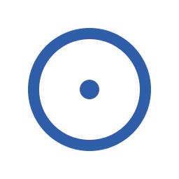

Two complementary square versions derived from the Classic Lens concept.
Just the lens and the focus dot. For favicons, GitHub avatar, npm/crates.io badge, app icon. Optimized for small sizes.

Balanced composition keeping the narrative: wavy → lens → clean. For Open Graph images, README hero, social media posts, presentation covers.
| Context | Use | Why |
|---|---|---|
| Favicon (16×16, 32×32) | Icon Pure | Traits too small to read |
| GitHub / GitLab avatar | Icon Pure | Cropped to circle anyway |
| App launcher icon | Icon Pure | Space is tight |
| Open Graph image (1200×630) | Square Social + title text | Room to tell the story |
| README hero image | Square Social | Narrative supports reading |
| Presentation cover slide | Square Social | Visible from back of room |
| Website nav bar | Horizontal version (01) | Wordmark fits naturally |